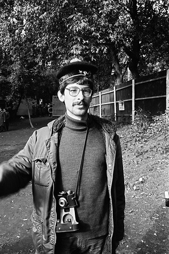

    <head>
        <title>
            Aislynn's webDev Page 
        </title>

        <meta charset="UTF-8">

        <link rel="stylesheet" href="style.css">
        <link href="https://fonts.googleapis.com/css2?family=DM+Sans&display=swap" rel="stylesheet">
    </head>

</html>

<body>

    <div id="background_box">

        <div id="blue_title">
            C:\
        </div>

        <div id="right_top_corner">
            <div id="box_1">
            X
            </div>
            
            <div id="box_2">
            ❐
            </div>

            <div id="box_3">
            -
            </div>

        </div>


        <div class="pic_overlay">
            <div>
                

            </div>

            <div>
                             
            </div>

            <textarea id="input1" class="input" name="input" rows="1" cols="15">Alexei Shulgin
            </textarea>


        </div>
        <textarea id="input2" class="input" name="input" rows="2" cols="45">Alexei Shulgin was born 1963 in Moscow. He is a contemporary artist, musician, and online curator.
        </textarea>

        <div id="input_pos3">
            <a href="https://artinvestment.ru/en/invest/ideas/20101101__photo.html">
				<button id="page2_button3" class="main_button">&nbsp;</button>
			</a>
            
            <textarea id="input3" class="input" name="input" rows="1" cols="36">"Immediate Photography" Group (1988):
            </textarea>    
        </div>

        
        <textarea id="input4" class="input" name="input" rows="2" cols="56">Between 1994-95, he taught photography and contemporary art at the United Art Workshops.
        </textarea>    

        <textarea id="input5" class="input" name="input" rows="3" cols="60">Began his activities on the internet in 1994, as an intersection of photography and new technologies for dissemination, with the creation of the electronic photo gallery "Hot Pictures."
        </textarea>   

        <textarea id="input6" class="input" name="input" rows="3" cols="40">He founded Moscow WWWArt Centre in 1995, and thereafter started teaching seminars on the www and internet art.
        </textarea>


        <div id="input_pos7">
            <a href="http://www.easylife.org/">
				<button id="page2_button7" class="main_button">&nbsp;</button>
			</a>
            
            <textarea id="input7" class="input" name="input" rows="2" cols="60">The Easylife site hosts the introduction to net art manifesto, and many other projects in and off the internet (1997):
            </textarea>    
        </div>

        <div id="input_pos8">
            <a href="http://www.c3.hu/collection/form/">
				<button id="page2_button8" class="main_button">&nbsp;</button>
			</a>
            
            <textarea id="input8" class="input" name="input" rows="1" cols="50">He released his first interactive work, Form Art (1997):
            </textarea>    
        </div>

        <div id="input_pos9">
            <a href="http://www.easylife.org/386dx/">
				<button id="page2_button9" class="main_button">&nbsp;</button>
			</a>
            
            <textarea id="input9" class="input" name="input" rows="" cols="70">Since 1998, he also works as a musician with 386 DX, a cyberpunk band which just released a new CD in 2001:
            </textarea>    
        </div>

        <div id="input_pos10">
            <a href="http://www.electroboutique.com/">
				<button id="page2_button10" class="main_button">&nbsp;</button>
			</a>
            
            <textarea id="input10" class="input" name="input" rows="1" cols="56">Since 2004, Shulgin has been a co-owner of Electroboutique:
            </textarea>    
        </div>
        


</body>